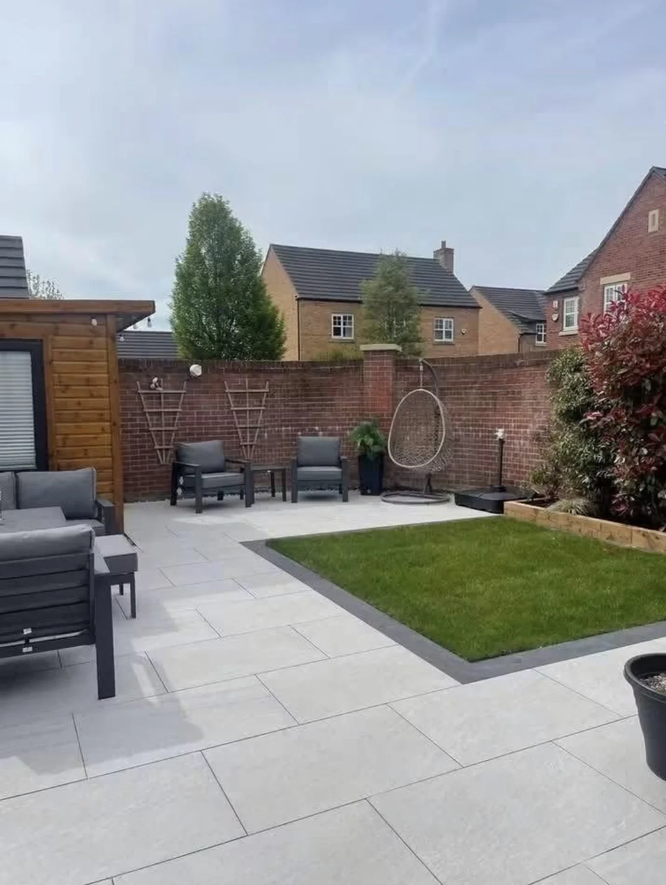
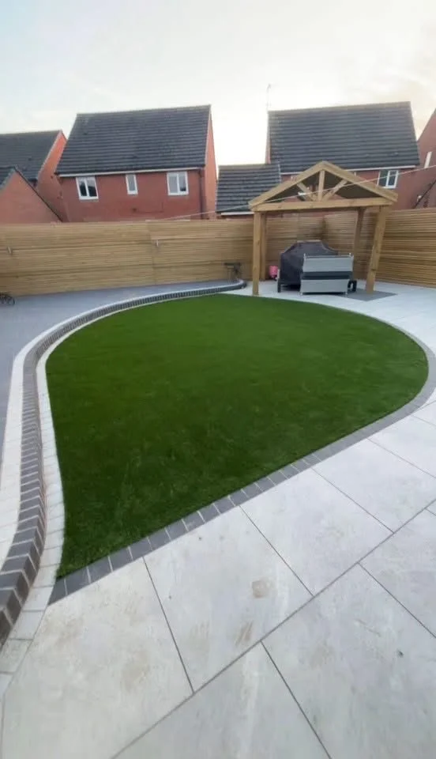
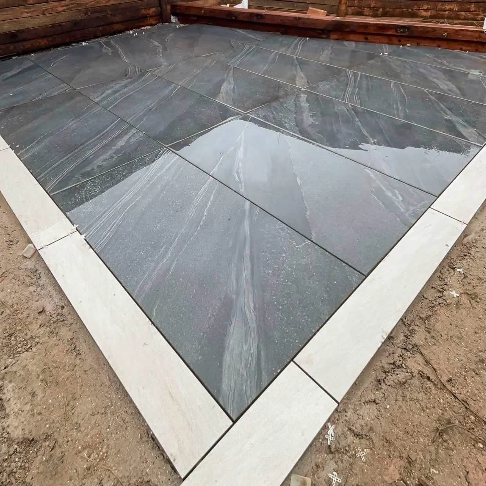

NEWTON-LE-WILLOWS · LANDSCAPING & DRIVEWAYS
Your garden.
A whole new outlook.
Patios, driveways, fencing and complete garden transformations. Create more room for outdoor living with JLA Landscapes.
OUTDOORS, WITH MORE POSSIBILITIES
Fresh spaces.
Thoughtful finishes.
A patio for summer evenings. A lawn with a clear edge. A garden that feels easier to use and better connected to the home.
JLA Landscapes is a fully qualified landscaping team in Newton-le-Willows, with over eight years’ experience across landscaping, driveways and fencing.
Let’s talk about your ideas →

A GARDEN MADE FOR LIVING
Room to unwind.
Space to enjoy.
A grey paved terrace sits below a defined artificial lawn, with contrasting edging connecting the levels. The seating area gives the garden a place to pause and spend time outside.
Explore garden transformations →RECENT JLA PROJECTS
The work.
The details. The difference.
Explore JLA’s paving, lawns and timber finishes. Tap any photograph to see the full view.
BEFORE & AFTER
A familiar path.
A fresh finish.
The existing garden path, followed by the new pale paving. A practical route through the garden becomes a cleaner, more considered part of the space.
Discuss your paving project →RECOMMENDED BY CUSTOMERS
100% recommendBased on 9 Facebook reviews.

JLA LANDSCAPES
Built around
your outside space.
From a single patio to a wider garden transformation, JLA Landscapes brings together the surfaces, boundaries and finishing work that shape a garden.
A fully qualified team specialising in landscaping, driveways and fencing.
Paving, lawn edges, steps, screening and timber features working together.
Share your postcode and project plans to discuss the work with the team.
NEWTON-LE-WILLOWS
Let’s make more
of your garden.
Based in Newton-le-Willows. Send your postcode to confirm availability for your property.
In association with JLA Jetwash — ask the team about cleaning existing outdoor surfaces.
BEFORE WE GET STARTED
A few useful answers.
What can JLA Landscapes help with?
Landscaping, driveways, fencing and garden transformations. The project portfolio includes patios, paths, lawns, planting beds and timber features.
What should I send for a quote?
Your postcode, photographs, approximate measurements and a description of the work. Mention any access restrictions and which parts of the garden you want to keep.
Can I see the full project photos?
Yes. Tap a gallery image to open the full photograph. Use the close button or Escape to return to the page.
How does the WhatsApp form work?
Your chosen service and project details are added to a prepared message. WhatsApp opens so you can review it, add photographs and send it to JLA.
YOUR NEXT GARDEN PROJECT
Start with
your ideas.
Tell JLA what you want to change, the finish you like and how you want to use the space. Share your postcode and a few project details to get the conversation started.
JLA LANDSCAPES · NEWTON-LE-WILLOWS
Ready for a
fresh outlook?
Talk to JLA about your next garden, driveway or fencing project.